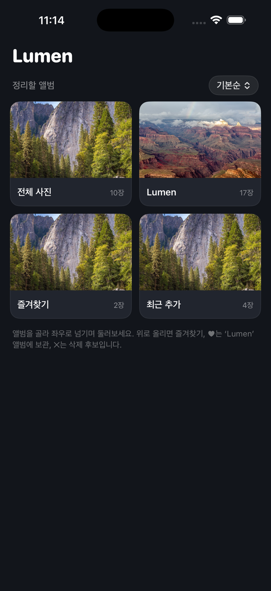
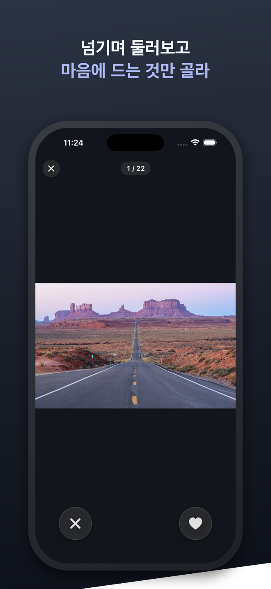

Gestures
새로 배울 건 없어요. 사진 앱에서 쓰던 그 손짓이 전부 통합니다.
다음 사진이 손가락에 붙어 따라옵니다. 아무것도 결정되지 않아요 — 그냥 구경.
화면 가장자리를 톡톡. 한 손 엄지로도 빠르게 다음·이전 사진으로.
두 손가락으로 디테일 확대, 더블탭으로 토글. 줌 상태에선 드래그가 팬이 됩니다.
지울 사진은 위로 쓱 — ‘후보’로만 담겨요. 마지막에 확인 후 한 번에 삭제.
남길 사진은 보관함 버튼. 즉시 ‘Lumen’ 앨범에 모여요 — 나중에 천천히 분류.
잘못 넘겼나요? ↩ 하나면 마지막 동작이 그대로 되돌아옵니다 — 보관도, 삭제 후보도.
Feels native
탭하는 순간 메인스레드 작업 0 — 빨라서가 아니라, 끊기지 않아서 부드럽습니다.


Scale
10만 장 라이브러리도 즉시
장수와 무관하게 같은 속도로 열립니다.
Flow
전체 · 즐겨찾기 · 동영상 · 스크린샷, 또는 앨범별로. 정리할 묶음을 하나 선택.
좌우로 편하게 구경하고, ★로 즐겨찾기. 아무 사진에서나 정리를 시작할 수 있어요.
‘정리 시작’을 누르면 보관함(Lumen 앨범) 버튼이 나타나요. 지울 사진은 위로 쓱.
요약에서 보관·삭제 수를 확인하고, 삭제는 한 번에 안전하게. 다음엔 ‘이어서 정리’로 그 자리부터.
Safety
보관은 누르는 즉시 Lumen 앨범에 저장돼 앱이 꺼져도 남아요. 다음에 열면 ‘이어서 정리’ 카드가 마지막 자리로 데려다줍니다.
위로 올린 사진은 ‘후보’일 뿐. 실수는 ↩로 즉시 복구되고, 실제 삭제는 마지막에 시스템 확인을 거쳐 한 번에 — 그 전엔 아무것도 사라지지 않습니다.
즐겨찾기·앨범은 모두 Apple 사진의 것을 씁니다. Lumen을 지워도 정리 결과는 사진 앱에 그대로.
Get started
아직 App Store 배포 전이에요. 무료 Apple ID면 내 폰에 올릴 수 있습니다.
git clone 후 cd ios && xcodegen generateLumenIOS.xcodeproj를 Xcode로 열기⌘R → 첫 실행 시 설정에서 개발자 신뢰iOS 17 이상 · Apple Photos(PhotoKit) 권한 필요 · 한국어/English · MIT License